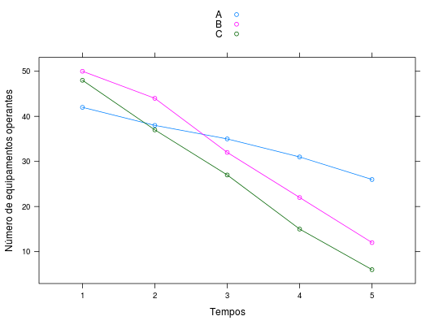

Dados referentes aos tempos de falhas de equipamentos.
Um data.frame com 4 variáveis.
tempequipnityitPAULA (2004), Exercício 3.7.14, página 272.
Lawless, J. F. (1982). Statistical Models and Methods for Lifetime Data. John Wiley & Sons, New York. (Página 389)
Efron, B. (1988). Logistic regression, survival analysis, and the Kaplan-Meier curve. J. Amer. Stat. Assoc., 83. (Páginas 414-425)
library(lattice) data(PaulaEx3.7.14)#> Warning: data set ‘PaulaEx3.7.14’ not foundstr(PaulaEx3.7.14)#> 'data.frame': 15 obs. of 4 variables: #> $ temp : int 1 1 1 2 2 2 3 3 3 4 ... #> $ equip: Factor w/ 3 levels "A","B","C": 1 2 3 1 2 3 1 2 3 1 ... #> $ nit : int 42 50 48 38 44 37 35 32 27 31 ... #> $ yit : int 4 6 11 3 11 10 3 10 12 5 ...PaulaEx3.7.14$temp <- as.factor(PaulaEx3.7.14$temp) xyplot(nit ~ temp, groups = equip, data = PaulaEx3.7.14, type = "o", auto.key = TRUE, xlab = "Tempos", ylab = "Número de equipamentos operantes")